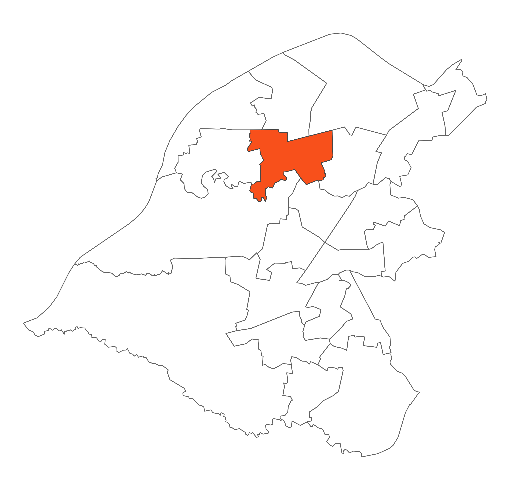

 Urmston is situated in the heart of the northern part of the Borough. It is split into three residential areas by the M60 motorway and a railway line. The Mersey Valley and the River Mersey form the southern boundary, with the residential areas of Stretford to the east and Flixton to the west. Within the ward are Urmston Town Centre and one of the five cemeteries of the Borough.